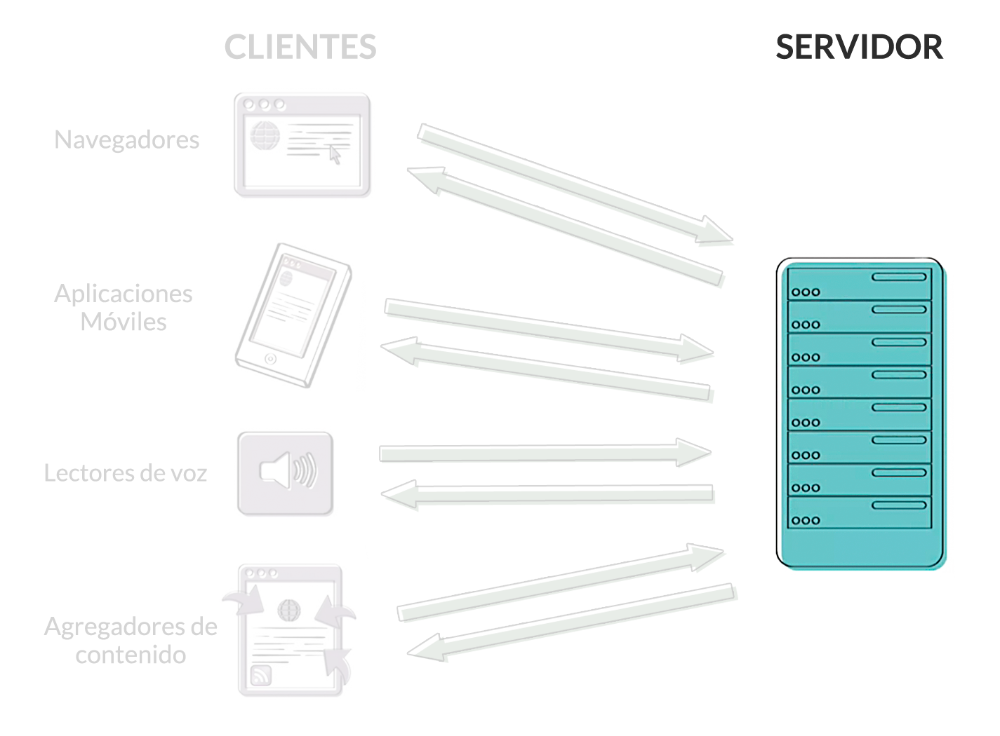

Introducción a
los lenguajes web:
HTML y CSS
Hola.
Soy Nahuel Sotelo
Mi email: hola@nahuelsotelo.com
Mi web: www.nahuelsotelo.com
¿Como funciona internet?
(muy brevemente)
Internet vs web
Internet

Una red de ordenadores conectados en todo el mundo que comparten información mediante una serie de protocolos.
- SMS
- FTP
- HTTP
World Wide Web
Una manera de transmitir gatos información por internet utilizando el protocolo HTTP y HTML.
Clientes y servidores
La web puede resumirse como una serie de interacciones entre dos tipos de sistemas: Servidores y Clientes

Los Clientes son los encargados de solicitar y mostrar el contenido web.

Los Servidores son aplicaciones (software) encrgados de enviar contenido a los Clientes cuando este lo solicita.
Ciclo de una transacción web


URL
(Uniform Resource Locator)
http://www.baued.es/es/estudios/workshops.html
Las URL son direcciones exclusivas que nos permiten localizar recursos dentro de internet.
Generalmente están compuestas de 3 partes principales:
- el protocolo
- el nombre del sitio
- la ruta absoluta al recurso en concreto
http://www.baued.es/es/estudios/workshops.html
Protocolo
Los protocolos son lenguajes simples que permiten a diferentes ordenadores compartir información entre sí independientemente de la configuración, sistema operativo o software que utilicen.
http://www.baued.es/es/estudios/workshops.html
The internet protocol suit
Algunos protocolos comúnes en el entorno de internet: FTP, HTTP, SMTP, TCP/IP, UPD.
En concreto, el encargado de transferir datos a través de internet es el protocolo HTTP (HyperText Transfer Protocol)
http://www.baued.es/es/estudios/workshops.html
Sitio Web
El nombre del sitio web se compone a su vez de varias partes:
- Subdominio: Es una carpeta dentro del servidor donde está alojada la web (por defecto suele ser "www")
- Nombre del dominio: Es el nombre de nuestra web.
- Dominio de nivel superior (top level domain): Es el nombre que el cliente usa para encontrar el servidor correspondiente. Puede ser genérico o geográfico.
http:// www. baued .es /es/estudios/workshops.html
Ruta del recurso
Es la ruta dentro de la carpeta del dominio al recurso específico que el cliente HTTP está solicitando.
Si no se especifica en la URL, el cliente intentará encontrar el archivo que esté configurado para mostrarse por defecto (normalmente index.html o default.html)
http://www.baued.es/es/estudios/workshops.html
Ejercicio
Mirar carga de nahuelsotelo.com en el timeline de Google Chrome para ver como se cargan los recursos
Los lenguajes de la web
Los pilares de la web
Hay 3 lenguajes que pueden considerarse los pilares sobre los que se sotiene cualquier sitio web:
- HTML (Hypertext Markup Language)
- CSS (Cascading Style Sheets)
- Javascript
HTML
(Hypertext Markup Language)
Es el lenguaje que se utiliza para crear un documento web.
Se trata de un lenguaje de marcado, es decir un sistema para identificar y describir los diferentes elementos de una página
Esto es un titular de nivel 1
Este es de nivel 2
Esto es un párrafo con un texto destacado.
CSS
(Cascading Style Sheets)
Es un lenguaje creado para controlar la presentación (el estilo) de un documento HTML.
.subtitulo {
color: red;
font-family: 'Comic Sans MS';
font-size: xx-large;
}
Javascript
Es un lenguaje de programación que se utiliza para agregar interactividad y comportamientos dinámicos a nuestras páginas.
(function(){
var hi_button = document.getElementById('hi-button'),
hi_container = document.getElementById('hi-container');
hi_button.onclick = function() {
hi_container.innerHTML = 'Hola
';
}
})();
Reveal.js
HTML Presentations Made Easy
Created by Hakim El Hattab / @hakimel
Heads Up
reveal.js is a framework for easily creating beautiful presentations using HTML. You'll need a browser with support for CSS 3D transforms to see it in its full glory.
Vertical Slides
Slides can be nested inside of other slides, try pressing down.
Basement Level 1
Press down or up to navigate.
Basement Level 2
Cornify

Basement Level 3
That's it, time to go back up.
Slides
Not a coder? No problem. There's a fully-featured visual editor for authoring these, try it out at http://slid.es.
Point of View
Press ESC to enter the slide overview.
Hold down alt and click on any element to zoom in on it using zoom.js. Alt + click anywhere to zoom back out.
Works in Mobile Safari
Try it out! You can swipe through the slides and pinch your way to the overview.
Marvelous Unordered List
- No order here
- Or here
- Or here
- Or here
Fantastic Ordered List
- One is smaller than...
- Two is smaller than...
- Three!
Transition Styles
You can select from different transitions, like:
Cube -
Page -
Concave -
Zoom -
Linear -
Fade -
None -
Default
Themes
Reveal.js comes with a few themes built in:
Default -
Sky -
Beige -
Simple -
Serif -
Night
Moon -
Solarized
* Theme demos are loaded after the presentation which leads to flicker. In production you should load your theme in the <head> using a <link>.
Global State
Set data-state="something" on a slide and "something"
will be added as a class to the document element when the slide is open. This lets you
apply broader style changes, like switching the background.
Custom Events
Additionally custom events can be triggered on a per slide basis by binding to the data-state name.
Reveal.addEventListener( 'customevent', function() {
console.log( '"customevent" has fired' );
} );
Slide Backgrounds
Set data-background="#007777" on a slide to change the full page background to the given color. All CSS color formats are supported.
Image Backgrounds
<section data-background="image.png">Repeated Image Backgrounds
<section data-background="image.png" data-background-repeat="repeat" data-background-size="100px">Background Transitions
Pass reveal.js the backgroundTransition: 'slide' config argument to make backgrounds slide rather than fade.
Background Transition Override
You can override background transitions per slide by using data-background-transition="slide".
Clever Quotes
These guys come in two forms, inline:
“The nice thing about standards is that there are so many to choose from”
and block:
“For years there has been a theory that millions of monkeys typing at random on millions of typewriters would reproduce the entire works of Shakespeare. The Internet has proven this theory to be untrue.”
Pretty Code
function linkify( selector ) {
if( supports3DTransforms ) {
var nodes = document.querySelectorAll( selector );
for( var i = 0, len = nodes.length; i < len; i++ ) {
var node = nodes[i];
if( !node.className ) {
node.className += ' roll';
}
}
}
}
Courtesy of highlight.js.
Intergalactic Interconnections
You can link between slides internally, like this.
Fragmented Views
Hit the next arrow...
... to step through ...
any type- of view
- fragments
Fragment Styles
There's a few styles of fragments, like:
grow
shrink
roll-in
fade-out
highlight-red
highlight-green
highlight-blue
current-visible
highlight-current-blue
Spectacular image!

Export to PDF
Presentations can be exported to PDF, below is an example that's been uploaded to SlideShare.
Take a Moment
Press b or period on your keyboard to enter the 'paused' mode. This mode is helpful when you want to take distracting slides off the screen during a presentation.